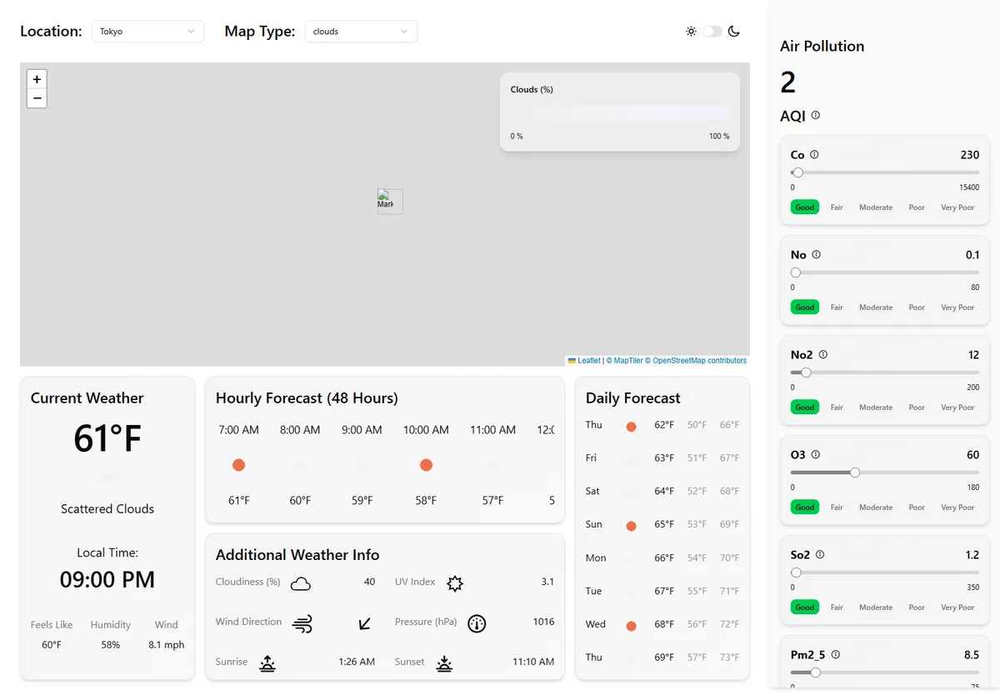

Light and Dark Mode
A ThemeProvider, context and a switch that toggles the dark class.
▶ Watch this part (05:36:01)Goal
The last feature of the video: a light/dark switch with a sun on one side and a moon on the other. Until now the app was always dark, because index.html had class="dark" on <body>. In this step the presenter:
- installs the shadcn Switch and builds
LightDarkToggle; - creates a ThemeProvider: a React context that holds
"light"or"dark"and atoggleThemefunction for the whole app; - uses a useEffect to add or remove the
darkclass on<html>; - explains why that one class recolours everything (shadcn's CSS variables), and fixes the spots that looked wrong in light mode.

What the presenter explains
"This is something that is becoming more and more common in modern apps. So I want to show you how it's done using Tailwind plus Shadcn" (5:36:01). The Switch (5:36:45) "basically just works like this. You just toggle it back and forth… because it's binary".
Why a provider (5:40:09): "Typically, the way I like to handle light mode and dark mode, is to wrap my entire app in a provider, which I usually call theme provider… sometimes, especially on bigger apps, you might need to know in really deeply nested components, whether we're on dark mode or not."
A hook next to the provider (5:44:24): "in whatever file I made my provider, I'll usually export a hook… If you try and call useTheme now in somewhere where you shouldn't, it'll throw an error." This pattern is the reason for a lint error (below).
The magic (5:46:44): in the dev tools the presenter deletes class="dark" from <body> by hand, and the whole app turns light. "What this means is that what we need to do is listen for our theme changing. If it changes to dark, we need to add class dark… If it goes light, we need to remove dark."
How it works (5:48:39–5:51:20): "I haven't added a single style in this entire app that is dark mode specific." shadcn defined "a ton of CSS variables" in index.css, once for light (:root) and once more inside a .dark selector: "any element that has dark on it will define all of these CSS variables" again with dark values. And a strong recommendation: "I am going to 100% recommend this pattern over spamming the dark selector in Tailwind… It's fine to use it in some spots if you need to, but if you want to handle the majority of the dark mode styling, do it with CSS variables."
New to React context? Sharing a value without passing props
Props go one level at a time. When many components at different depths need the same value (the theme), passing it through every layer is tedious. Context solves that in three parts:
createContext(defaultValue)creates the channel, once, outside any component.- A provider,
<ThemeContext.Provider value={…}>, puts a value into it for everything rendered inside. - Any component inside calls
useContext(ThemeContext)to read it. When the value changes, those components re-render.
Here the value is { theme, toggleTheme }, so any component can read the theme and change it.
New to useEffect? Doing something after React renders
React components describe what to show; they shouldn't directly change things outside React (the DOM outside your component, timers, storage) while rendering. useEffect(fn, [deps]) runs fn after React has updated the page, and again whenever a value in the dependency array changes. Adding a class to <html> is such an outside change: the <html> element is not rendered by React. With [theme] as dependencies, the effect runs on first load and on every toggle.
New to CSS variables and dark mode tokens? One class, every colour
A CSS custom property like --card: oklch(0.97 0 0); is a named value; var(--card) reads it. Variables are inherited and can be redefined by a more specific rule. index.css defines every colour twice:
:root { --card: oklch(0.97 0 0); } /* light */
.dark { --card: oklch(0.21 0.006 285.885); } /* dark */
@theme inline { --color-card: var(--card); } /* makes bg-card, text-card… */A component writes bg-card once. Tailwind turns it into background-color: var(--color-card), which points at --card, whose value depends on whether a .dark ancestor exists. Toggle the class, and every bg-card, text-foreground, bg-sidebar on the page changes at once. These named colours are called design tokens. The numbers are oklch(lightness chroma hue); lightness 1 is white, 0 black.
New to Tailwind's dark: variant? For the few exceptions
When one element needs a different style in dark mode that no token covers, Tailwind's dark: prefix applies a class only in dark mode: border dark:border-none = "a border, except in dark mode". By default Tailwind v4's dark: follows the operating system setting (prefers-color-scheme). Line 4 of index.css changes that:
@custom-variant dark (&:is(.dark *));It redefines dark: as "this element is inside an element with class dark". shadcn wrote it when it was initialised (step 12). Compiled with the locked Tailwind, dark:bg-sidebar becomes .dark\:bg-sidebar:is(.dark *) { background-color: var(--color-sidebar) }. Because the class goes on <html>, every element on the page is "inside .dark".
Step by step
- Install the switch
npx shadcn@latest add switchCreates
src/components/ui/switch.tsxand installs@radix-ui/react-switch. - Create
src/components/LightDarkToggle.tsxSun icon,
<Switch />, moon icon in a row (5:37:07–5:38:38);sun.svgandmoon.svgfrom SVG Repo insrc/assets/. Render it inAppnext to the hamburger, both in adivwithml-auto flex gap-4 items-center(5:39:23). - Create
src/components/ThemeProvider.tsxTypes,
createContext, the provider withuseState("dark")andtoggleTheme, and theuseThemehook (5:40:53–5:45:13). - Wrap the app in
main.tsx(5:44:01). - Connect the switch:
checked={theme === "dark"},onCheckedChange={toggleTheme}(5:45:59). - Add the effect and remove the hard-coded class:
useEffectin the provider; deleteclass="dark"from<body>inindex.html(5:47:29–5:48:16). - Icons in both themes: remove every
invertclass (the presenter searched the project for "invert") and add one rule.dark svg { filter: invert(1); }toindex.css(5:52:27–5:53:35). - Fix light mode:
--card: oklch(0.97 0 0);border dark:border-noneonCard;dark:bg-sidebar bg-foreground/25on the slider track;dark:bg-accent bg-foreground/25on the shadcn skeleton;dark:bg-sidebarinSideCardSkeleton;md:pb-11inCurrentSkeleton(5:53:57–5:58:28). - The switch on phones: wrap it in
<div className="hidden xs:block">inAppand add it toMobileHeaderwithgap-8(5:58:51–5:59:37).
The provider
import {
createContext,
useContext,
useEffect,
useState,
type ReactNode,
} from "react"
type Props = {
children: ReactNode
}
type Theme = "light" | "dark"
type ThemeContextType = {
theme: Theme
toggleTheme: () => void
}
const ThemeContext = createContext<ThemeContextType | undefined>(undefined)
export default function ThemeProvider({ children }: Props) {
const [theme, setTheme] = useState<Theme>("dark")
const toggleTheme = () => {
setTheme((prev) => (prev === "dark" ? "light" : "dark"))
}
useEffect(() => {
const root = document.documentElement
if (theme === "dark") {
root.classList.add("dark")
} else {
root.classList.remove("dark")
}
}, [theme])
return (
<ThemeContext.Provider value={{ theme, toggleTheme }}>
{children}
</ThemeContext.Provider>
)
}
export const useTheme = () => {
const context = useContext(ThemeContext)
if (!context) throw new Error("useTheme must be used within a ThemeProvider")
return context
}Line by line
| Line(s) | Code | What it does & why |
|---|---|---|
| 1–7 | import { createContext, useContext, useEffect, useState, type ReactNode } from "react" | The three context/hook functions, useState, and the type of anything React can render (for children). |
| 9–11 | type Props = { children: ReactNode } | The provider wraps other components, which arrive as the children prop ("Children like in all providers are just a prop", 5:42:05). |
| 13 | type Theme = "light" | "dark" | Only two possible strings; TypeScript rejects "blue". |
| 15–18 | type ThemeContextType = { theme: Theme; toggleTheme: () => void } | The shape of what the context provides: the current theme and a function with no arguments and no return value. |
| 20 | const ThemeContext = createContext<ThemeContextType | undefined>(undefined) | The channel, created at module level ("always outside of a component"). The default undefined is what useContext returns when there is no provider above, which the hook uses to detect misuse. |
| 22 | export default function ThemeProvider({ children }: Props) { | The component that will wrap <App />. |
| 23 | const [theme, setTheme] = useState<Theme>("dark") | The current theme, starting as "dark" on every page load. It is not saved anywhere, and the operating system's light/dark setting is ignored (see the warning below; step 27 changes this). |
| 25–27 | const toggleTheme = () => { setTheme((prev) => (prev === "dark" ? "light" : "dark")) } | Flips the theme. It uses the updater form setTheme(prev => …), which always works on the latest value. |
| 29–36 | useEffect(() => { const root = document.documentElement; if (theme === "dark") { root.classList.add("dark") } else { root.classList.remove("dark") } }, [theme]) | After each render where theme changed (and on the first render), syncs the class on document.documentElement, which is the <html> element. classList.add does nothing if the class is already there; remove does nothing if it's not. (Shorter equivalent: root.classList.toggle("dark", theme === "dark").) |
| 38–42 | <ThemeContext.Provider value={{ theme, toggleTheme }}>{children}</ThemeContext.Provider> | Provides the value to the whole app. The double braces are a JSX expression { } containing an object { theme, toggleTheme }. |
| 45–49 | export const useTheme = () => { const context = useContext(ThemeContext); if (!context) throw new Error("useTheme must be used within a ThemeProvider"); return context } | A custom hook. It reads the context and, if there's no provider, throws a clear error instead of letting code crash later on undefined.theme. After the check, TypeScript knows context is ThemeContextType (not undefined), so callers get proper types. |
Lint error: react-refresh/only-export-components
npm run lint on the committed file reports (checked with the locked ESLint):
src/components/ThemeProvider.tsx
45:14 error Fast refresh only works when a file only exports components. Use a new file to share constants or functions between components react-refresh/only-export-componentsVite's hot module replacement for React ("Fast Refresh") can only swap a file in place, keeping state, when the file exports nothing but components. This file also exports useTheme, a hook, so edits to it cause a full reload instead (and the app falls back to dark). The app still builds and runs. The fix is to move useTheme (and the context) into its own file, src/hooks/useTheme.ts, which step 27 does; after that, lint reports no errors.
Wrapping the app
import { StrictMode } from "react"
import { createRoot } from "react-dom/client"
import "./index.css"
import App from "./App.tsx"
import { QueryClient, QueryClientProvider } from "@tanstack/react-query"
import ThemeProvider from "./components/ThemeProvider.tsx"
const queryClient = new QueryClient()
createRoot(document.getElementById("root")!).render(
<StrictMode>
<QueryClientProvider client={queryClient}>
<ThemeProvider>
<App />
</ThemeProvider>
</QueryClientProvider>
</StrictMode>
)| Line(s) | Code | What it does & why |
|---|---|---|
| 6 | import ThemeProvider from "./components/ThemeProvider.tsx" | New import (the .tsx extension is allowed by this project's TypeScript settings). |
| 11–17 | <StrictMode><QueryClientProvider client={queryClient}><ThemeProvider><App /></ThemeProvider></QueryClientProvider></StrictMode> | Providers nest. ThemeProvider sits around App, so everything in the app can call useTheme. Its position inside or outside QueryClientProvider doesn't matter here because neither uses the other. |
The switch
import { Switch } from "./ui/switch"
import Sun from "/src/assets/sun.svg?react"
import Moon from "/src/assets/moon.svg?react"
import { useTheme } from "./ThemeProvider"
type Props = {}
export default function LightDarkToggle({}: Props) {
const { theme, toggleTheme } = useTheme()
return (
<div className="flex items-center gap-2">
<Sun className="size-5" />
<Switch checked={theme === "dark"} onCheckedChange={toggleTheme} />
<Moon className="size-5" />
</div>
)
}| Line(s) | Code | What it does & why |
|---|---|---|
| 1 | import { Switch } from "./ui/switch" | The shadcn switch (a styled Radix switch: a <button role="switch"> with a sliding thumb). |
| 2–3 | import Sun from "/src/assets/sun.svg?react", import Moon from … | Two icons as components via svgr. |
| 4 | import { useTheme } from "./ThemeProvider" | The hook from the provider file. |
| 6, 8 | type Props = {} … LightDarkToggle({}: Props) | The tsrfc snippet's empty props: two lint errors (no-empty-object-type, no-empty-pattern), as with the skeletons in step 22. Fixed in step 25. |
| 9 | const { theme, toggleTheme } = useTheme() | Reads both values from context. |
| 11 | <div className="flex items-center gap-2"> | Icon, switch, icon in a centred row, 0.5rem apart. |
| 12, 14 | <Sun className="size-5" />, <Moon className="size-5" /> | 1.25rem icons. Sun on the left (off = light), moon on the right (on = dark). |
| 13 | <Switch checked={theme === "dark"} onCheckedChange={toggleTheme} /> | A controlled switch: its position always comes from the state ("checked if the theme is equal to dark because the moon icon is on the right side", 5:45:59). onCheckedChange is Radix's change event; it passes the new boolean, which toggleTheme simply ignores because it flips the previous value. |
The shadcn switch.tsx itself is not edited. Its classes already contain dark: variants (for example dark:data-[state=unchecked]:bg-input/80), which work thanks to the @custom-variant line.
The styles: index.css
@import "tailwindcss";
@import "tw-animate-css";
@custom-variant dark (&:is(.dark *));
:root {
font-family: system-ui, Avenir, Helvetica, Arial, sans-serif;
line-height: 1.5;
font-weight: 400;
color-scheme: light dark;
color: rgba(255, 255, 255, 0.87);
background-color: #242424;
font-synthesis: none;
text-rendering: optimizeLegibility;
-webkit-font-smoothing: antialiased;
-moz-osx-font-smoothing: grayscale;
--sidebar-width: 23rem;
--radius: 0.625rem;
--background: oklch(1 0 0);
--foreground: oklch(0.141 0.005 285.823);
--card: oklch(0.97 0 0);
--card-foreground: oklch(0.141 0.005 285.823);
--popover: oklch(1 0 0);
--popover-foreground: oklch(0.141 0.005 285.823);
--primary: oklch(0.21 0.006 285.885);
--primary-foreground: oklch(0.985 0 0);
--secondary: oklch(0.967 0.001 286.375);
--secondary-foreground: oklch(0.21 0.006 285.885);
--muted: oklch(0.967 0.001 286.375);
--muted-foreground: oklch(0.552 0.016 285.938);
--accent: oklch(0.967 0.001 286.375);
--accent-foreground: oklch(0.21 0.006 285.885);
--destructive: oklch(0.577 0.245 27.325);
--border: oklch(0.92 0.004 286.32);
--input: oklch(0.92 0.004 286.32);
--ring: oklch(0.705 0.015 286.067);
--chart-1: oklch(0.646 0.222 41.116);
--chart-2: oklch(0.6 0.118 184.704);
--chart-3: oklch(0.398 0.07 227.392);
--chart-4: oklch(0.828 0.189 84.429);
--chart-5: oklch(0.769 0.188 70.08);
--sidebar: oklch(0.985 0 0);
--sidebar-foreground: oklch(0.141 0.005 285.823);
--sidebar-primary: oklch(0.21 0.006 285.885);
--sidebar-primary-foreground: oklch(0.985 0 0);
--sidebar-accent: oklch(0.967 0.001 286.375);
--sidebar-accent-foreground: oklch(0.21 0.006 285.885);
--sidebar-border: oklch(0.92 0.004 286.32);
--sidebar-ring: oklch(0.705 0.015 286.067);
}
@theme inline {
--breakpoint-xs: 500px;
--radius-sm: calc(var(--radius) - 4px);
--radius-md: calc(var(--radius) - 2px);
--radius-lg: var(--radius);
--radius-xl: calc(var(--radius) + 4px);
--color-background: var(--background);
--color-foreground: var(--foreground);
--color-card: var(--card);
--color-card-foreground: var(--card-foreground);
--color-popover: var(--popover);
--color-popover-foreground: var(--popover-foreground);
--color-primary: var(--primary);
--color-primary-foreground: var(--primary-foreground);
--color-secondary: var(--secondary);
--color-secondary-foreground: var(--secondary-foreground);
--color-muted: var(--muted);
--color-muted-foreground: var(--muted-foreground);
--color-accent: var(--accent);
--color-accent-foreground: var(--accent-foreground);
--color-destructive: var(--destructive);
--color-border: var(--border);
--color-input: var(--input);
--color-ring: var(--ring);
--color-chart-1: var(--chart-1);
--color-chart-2: var(--chart-2);
--color-chart-3: var(--chart-3);
--color-chart-4: var(--chart-4);
--color-chart-5: var(--chart-5);
--color-sidebar: var(--sidebar);
--color-sidebar-foreground: var(--sidebar-foreground);
--color-sidebar-primary: var(--sidebar-primary);
--color-sidebar-primary-foreground: var(--sidebar-primary-foreground);
--color-sidebar-accent: var(--sidebar-accent);
--color-sidebar-accent-foreground: var(--sidebar-accent-foreground);
--color-sidebar-border: var(--sidebar-border);
--color-sidebar-ring: var(--sidebar-ring);
}
.dark {
--background: oklch(0.141 0.005 285.823);
--foreground: oklch(0.985 0 0);
--card: oklch(0.21 0.006 285.885);
--card-foreground: oklch(0.985 0 0);
--popover: oklch(0.21 0.006 285.885);
--popover-foreground: oklch(0.985 0 0);
--primary: oklch(0.92 0.004 286.32);
--primary-foreground: oklch(0.21 0.006 285.885);
--secondary: oklch(0.274 0.006 286.033);
--secondary-foreground: oklch(0.985 0 0);
--muted: oklch(0.274 0.006 286.033);
--muted-foreground: oklch(0.705 0.015 286.067);
--accent: oklch(0.274 0.006 286.033);
--accent-foreground: oklch(0.985 0 0);
--destructive: oklch(0.704 0.191 22.216);
--border: oklch(1 0 0 / 10%);
--input: oklch(1 0 0 / 15%);
--ring: oklch(0.552 0.016 285.938);
--chart-1: oklch(0.488 0.243 264.376);
--chart-2: oklch(0.696 0.17 162.48);
--chart-3: oklch(0.769 0.188 70.08);
--chart-4: oklch(0.627 0.265 303.9);
--chart-5: oklch(0.645 0.246 16.439);
--sidebar: oklch(0.21 0.006 285.885);
--sidebar-foreground: oklch(0.985 0 0);
--sidebar-primary: oklch(0.488 0.243 264.376);
--sidebar-primary-foreground: oklch(0.985 0 0);
--sidebar-accent: oklch(0.274 0.006 286.033);
--sidebar-accent-foreground: oklch(0.985 0 0);
--sidebar-border: oklch(1 0 0 / 10%);
--sidebar-ring: oklch(0.552 0.016 285.938);
}
.dark svg {
filter: invert(1);
}
@layer base {
* {
@apply border-border outline-ring/50;
}
body {
@apply bg-background text-foreground;
}
}
@keyframes fade-in {
from {
opacity: 0;
}
to {
opacity: 1;
}
}Line by line
| Line(s) | Code | What it does & why |
|---|---|---|
| 1 | @import "tailwindcss"; | Tailwind v4's single import (step 3). |
| 2 | @import "tw-animate-css"; | Animation utilities used by shadcn components (animate-in, fade-in-0…), added in step 12. |
| 4 | @custom-variant dark (&:is(.dark *)); | Makes dark: depend on a .dark ancestor instead of the operating-system setting. & is the element with the utility; :is(.dark *) means "is a descendant of .dark". |
| 6–18 | :root { font-family: …; color-scheme: light dark; color: rgba(255, 255, 255, 0.87); background-color: #242424; … } | Left over from the Vite starter. color and background-color are overridden by the body rule on line 136, so they don't show. |
| 19 | --sidebar-width: 23rem; | Step 23. |
| 20–51 | --radius: …; --background: oklch(1 0 0); --foreground: …; --card: oklch(0.97 0 0); … | The light tokens written by shadcn (zinc palette). --card was oklch(1 0 0) (white), identical to --background, so cards were invisible on the page; the presenter darkened it to 0.97 (5:54:42). |
| 54–91 | @theme inline { --breakpoint-xs: 500px; --radius-sm: …; --color-background: var(--background); … } | Registers Tailwind utilities that point at the tokens: --color-card creates bg-card, text-card, from-card and so on. inline means utilities use the referenced value directly, so they follow the token when .dark changes it. Line 55 is the custom breakpoint (step 23). |
| 93–125 | .dark { --background: oklch(0.141 …); --card: oklch(0.21 …); … } | The dark values of the same tokens. Any element with class dark (now <html>) redefines them for itself and everything inside it. |
| 127–129 | .dark svg { filter: invert(1); } | In dark mode, every <svg> is colour-inverted: the black icons from SVG Repo become white. Replaces the invert classes that were scattered over about ten files (5:53:11). |
| 131–138 | @layer base { * { @apply border-border outline-ring/50; } body { @apply bg-background text-foreground; } } | shadcn's base styles: default border and outline colours from the tokens, and the page background and text colour. This body rule is why the whole page follows the theme. |
| 140–147 | @keyframes fade-in { from { opacity: 0; } to { opacity: 1; } } | The card fade-in from step 19. |
index.css decides the colour per theme. This is the pattern the presenter recommends over many dark: classes.Fixing light mode
Once light mode worked, a few things looked wrong (5:53:57–5:58:28). Each fix and why:
| Problem in light mode | Fix (final code) | Where |
|---|---|---|
Icons invisible (white after invert, on white) | remove all invert classes; .dark svg { filter: invert(1); } | index.css 127–129 |
| Cards same white as the page | --card: oklch(0.97 0 0) (was oklch(1 0 0)) | index.css 23 |
| Cards still hard to tell apart | border dark:border-none: a thin border only in light mode | Card.tsx line 20 |
| Slider track invisible | dark:bg-sidebar bg-foreground/25 (light: text colour at 25% opacity) | ui/slider.tsx line 40 |
| Skeletons invisible | dark:bg-accent bg-foreground/25 (was bg-accent) | ui/skeleton.tsx line 8 |
| Side card skeletons too dark | dark:bg-sidebar (was bg-sidebar) | SideCardSkeleton.tsx |
| Current skeleton shorter than the card at md | className="md:pb-11" copied over | CurrentSkeleton.tsx |
Try the video's versions
The switch before it does anything (5:37:07)
import React from 'react'
import { Switch } from './ui/switch'
import Sun from "/src/assets/sun.svg?react"
import Moon from "/src/assets/moon.svg?react"
type Props = {}
export default function LightDarkToggle({}: Props) {
return (
<div className="flex items-center gap-2">
<Sun className="size-5"/>
<Switch/>
<Moon className="size-5"/>
</div>
)
}An uncontrolled switch: it flips visually but changes nothing. import React is unused (the snippet adds it; React 17+ doesn't need it for JSX) and was dropped later. At 5:39:01 the presenter added invert to both icons so they show on the dark page; step 7 above removes it again.
The provider before the effect (5:45:59)
Lines 1–27 and 38–49 of the final file, without the useEffect. The switch now changes theme (you can see it in React DevTools) but the page stays dark, because index.html still has <body class="dark">. Deleting that attribute by hand in the Elements panel turns the page light: that's the experiment at 5:46:44.
The effect with the hard-coded class still in index.html
<body class="dark">With the effect added but this attribute left in, toggling to light removes dark from <html> while <body> keeps it, so the page stays dark: the .dark rule still matches body and everything inside. That's why the presenter deletes it: the class must have a single owner, the provider. The repo's index.html has a plain <body>. (Reasoned from the CSS, not run.)
What you should see
Next to the dropdowns (or in the mobile header below 500 px): a sun, a switch, a moon. The app loads dark with the switch on. Click it: the page turns white, the cards become light grey with a thin border, icons turn black, sliders and skeletons stay visible; in the Elements panel, <html> loses class="dark". Click again: everything goes dark. The map tiles stay dark in both modes (the MapTiler style is fixed to "basic-dark"; step 27 makes it follow the theme).
Common mistakes
- "useTheme must be used within a ThemeProvider": you forgot to wrap
<App />inmain.tsx, or rendered a toggle outside it. - Toggling does nothing visible:
class="dark"still inindex.html, or the effect targetsdocument.bodywhile the hard-coded class is on another element. - Switch moves the wrong way:
checkedmust betheme === "dark"when the moon is on the right. - Some icons inverted twice: an old
invertclass left on an icon plus the global rule = black on black in dark mode. Search the project forinvert. - Using
dark:everywhere: it works, but each colour then lives in many files. Prefer changing tokens inindex.css. - Editing
ThemeProvider.tsxreloads the page and resets to dark: that is the Fast Refresh limitation explained in the lint warning above, not a bug in your code.
What the fixes don't cover
- Starts dark every time, not remembered, ignores the system setting (verified in the browser test):
useState("dark")runs on every load, nothing is stored, and a visitor whose computer is set to light still gets dark. Step 27 saves the choice in localStorage (key"weather-theme"), falls back toprefers-color-scheme, and switches the MapTiler style with the theme. - A light first frame is possible:
index.htmlno longer has the class, and effects run after React has rendered, so the very first paint can be light before the effect addsdark. (Reasoned from when effects run; not measured.) - Weather icons in light mode:
WeatherIconshows OpenWeather's.pngimages, which are mostly white. They are<img>, not<svg>, so the.dark svgrule never touches them, and on the light cards the clouds nearly disappear (visible in the screenshot above). A subtle background or drop shadow behind the icon would help. .dark svghits every SVG, including ones drawn by libraries, such as the Radix tooltip arrow (step 21). If an SVG ever looks wrong only in dark mode, this rule is the first suspect; you can scope it, for example to.dark .icon.- Accessibility: the switch has no text label, so a screen reader announces only "switch, on". Add
aria-label="Dark mode"to<Switch>. Not in the video.
Video vs repo
The repo matches the end of the video. In-between states shown above: the uncontrolled switch, the invert classes, the provider without its effect, and class="dark" in index.html. This is the last chapter of the video (it ends at 6:01:25 with the wrap-up: "it's not 100% without flaw… I'll leave it in your hands now"). Steps 25 to 28 of this guide pick up exactly there.
ThemeProviderholdstheme("dark"at start) andtoggleThemein a context;useThemereads it and throws outside the provider.- A
useEffecton[theme]adds or removesdarkon<html>; the hard-coded class inindex.htmlis removed. - shadcn's tokens in
:rootand.darkrecolour the whole app;@custom-variant dark (&:is(.dark *))makesdark:follow the class for the few exceptions. - Light-mode fixes: one
.dark svginvert rule, a 0.97 card colour,border dark:border-none,bg-foreground/25for track and skeletons. - Known gaps: not saved, ignores the system, map style fixed, react-refresh lint error (steps 25 and 27).